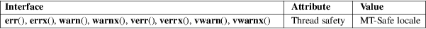

err, verr, errx, verrx, warn, vwarn, warnx, vwarnx − formatted error messages
Standard C library (libc, −lc)
#include <err.h>
[[noreturn]]
void err(int eval, const char
*fmt, ...);
[[noreturn]] void errx(int eval, const char
*fmt, ...);
void
warn(const char *fmt, ...);
void warnx(const char *fmt, ...);
#include <stdarg.h>
[[noreturn]]
void verr(int eval, const char
*fmt, va_list args);
[[noreturn]] void verrx(int eval, const char
*fmt, va_list args);
void
vwarn(const char *fmt, va_list
args);
void vwarnx(const char *fmt, va_list
args);
The err() and warn() family of functions display a formatted error message on the standard error output. In all cases, the last component of the program name, a colon character, and a space are output. If the fmt argument is not NULL, the printf(3)-like formatted error message is output. The output is terminated by a newline character.
The err(), verr(), warn(), and vwarn() functions append an error message obtained from strerror(3) based on the global variable errno, preceded by another colon and space unless the fmt argument is NULL.
The errx() and warnx() functions do not append an error message.
The err(), verr(), errx(), and verrx() functions do not return, but exit with the value of the argument eval.
For an explanation of the terms used in this section, see attributes(7).

BSD.
|
err() |
||||
|
warn() |
4.4BSD. |
Display the current errno information string and exit:
p =
malloc(size);
if (p == NULL)
err(EXIT_FAILURE, NULL);
fd = open(file_name, O_RDONLY, 0);
if (fd == −1)
err(EXIT_FAILURE, "%s", file_name);
Display an error message and exit:
if (tm.tm_hour
< START_TIME)
errx(EXIT_FAILURE, "too early, wait until %s",
start_time_string);
Warn of an error:
fd =
open(raw_device, O_RDONLY, 0);
if (fd == −1)
warnx("%s: %s: trying the block device",
raw_device, strerror(errno));
fd = open(block_device, O_RDONLY, 0);
if (fd == −1)
err(EXIT_FAILURE, "%s", block_device);
error(3), exit(3), perror(3), printf(3), strerror(3)